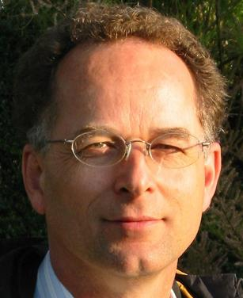

|  | John Norman
University of Cambridge |
|
Bio: A native of Cambridge (England), John studied Metallurgy and Materials Science at Birmingham University, graduating in 1977. His early career was as an engineer, commissioning a BOS steel plant at Lackenby and a 14m blast furnace at Redcar, both for British Steel and both in the north of England. From the steel industry, John moved to the oil industry and worked for Schlumberger as a Field Engineer logging oil wells in the Algerian Sahara. In 1982 John went to INSEAD in France and obtained an MBA specialising in Industrial Marketing and International Finance. Although he had planned to move into banking, John could not abandon technology and found himself joining an international product development consultancy as a technology strategy consultant. During his 3 years with PA Technology, John worked around the globe with clients such as Anglo American, Bosch, Digital Equipment and British Telecom. The next phase of John's career started when he joined an embryonic startup in Boston MA in 1986, beginning a period of 13 years in early stage, venture capital backed, technology startups. He has started companies in Boston, San Francisco, Spain and the UK, the most successful of which made its IPO after only 18 months and was valued at $200 million. Eventually the company was bought by the Alcon Division of Nestle for $900 million. During this period, John held roles of Managing Director, VP of Business Development and Director of International Marketing. He has experience in operational management as well as business planning and raising capital in the Medical Devices and Biotech sectors. John found his way into IT almost by accident in 1999 when planning a new venture in UK Healthcare Management. He solved some information management problems for the Cambridge teaching hospital while researching the market opportunity. This led to the formation of a small knowledge management IT consultancy in the pharmaceutical sector and an introduction to the use of IT to support teaching at the University of Cambridge- first at the Clinical School and later university-wide. John became Director of CARET in 2003 and is Head of eLearning for the University. CARET ( the Centre for Applied Research in Educational Technologies) provides course sites and community sites for the campus, develops new teaching applications and is increasingly researching the added value from technology deployment in higher education. In his role as Head of eLearning, he is preoccupied with sustainable development models for IT innovation in the higher education sector, models for the sharing of teaching and learning materials, and with finding evidence for the cost effectiveness of IT in teaching and learning. This preoccupation has led to a strategy based around open standards and open source development. John currently chairs the Advisory Committee of the JISC Open Source Software Watch. CARET hosts sites using BlackBoard, CourseWork (from Stanford) and dotLRN (from MIT). It has been using Sakai to host 2 large, distributed, research communities since January 2004. Cambridge will switch all users to Sakai during 2006, starting with community sites in the first half of the year and course sites over the summer. For the next 4 years, the University of Cambridge will contribute a minimum of 2 FTE's to the Sakai project from its own resources. Platform:
I want to see the Sakai Foundation become a successful community that develops and sustains useful, usable, reliable and scalable software for higher education. I believe this can best be achieved by collaboration between higher education institutions because this is the unit in which the user interests and the developer interests are aligned. For higher education institutions, it should be a simple matter of 'enlightened self-interest' to contribute to the project. However, I also believe that by being open and inclusive, we will attract valuable and talented contributions from a much broader community. I would like Sakai to be able to paraphrase Apache: "The Sakai projects are characterized by a collaborative, consensus based development process, an open and pragmatic software license, and a desire to create high quality software that leads the way in its field. We consider ourselves a community of developers and users." It will be the job of the Board to foster the attitudes that reinforce this vision. The Board will need to work to draw the project-funded institutions and the partner institutions closer together as well as to help the development team transition from a 'corporate' development model to a 'community' development model. Another critical area of Board responsibility will be the engagement of the user community in setting development priorities. This attention to user perspectives should include engagement with other projects addressing similar user needs to those addressed by Sakai and will likely involve the wider adoption of open standards. I'm not sure that I should dwell on any 'leadership' qualities I may have as I believe that communities grow and evolve and are not created. Thus the qualities required for the Board should be those of communication and strategic vision. As to approaches, I would seek to encourage greater openness in the activities of the Board, with a great deal more Board business taking place on open lists. I would also seek to foster greater understanding of each other's goals, priorities, and capabilities among potential contributor institutions. This will not be a trivial task as we must recognize that the community membership will be in competition with each other in many fields (not least software grant applications). Finally, I would seek to provide a clearer understanding of where Sakai is and where it is going to the broader community so that potential contributors (funders, commercial partners and other institutions) can make an informed choice about joining the community. I hope to see the Board developing a 'light touch' in governance and focusing attention on as small a set of tasks as possible with the limited funds at it's disposal. Above all, the Board must foster a healthy community, but quality assurance and external communication will also be important Board responsibilities. | |